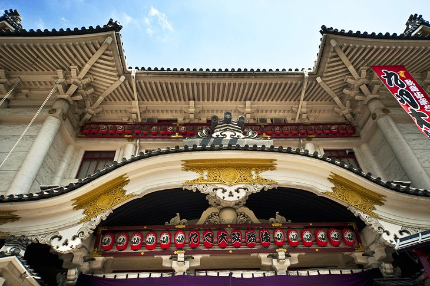

Tokyo is the cultural center of Japan . Having originated from the ethnic Jomon culture and then mixed with subsequent influences from first Chinese and Korean, then Greek and Indian, and finally from European and American influences, Japan developed its own unique culture.
Tokyo's unique culture is reflected in its traditional arts – ikebana (flower arranging), origami (making objects by folding paper), and ukiyo-e (woodblock printing); crafts – dolls, lacquer ware, and pottery; performances – kabuki (complex dramas performed in elaborate costumes), noh (restrained and highly stylized drama), bunraku (puppet theater), kyogen (short satirical plays), and kamishibai (storytelling with animation, sound, and music); and traditions – games, onsen (hot springs used as public bathing places), and tea ceremony...